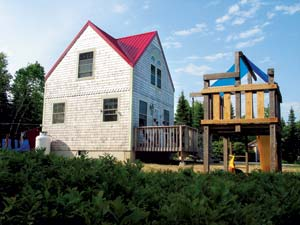
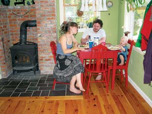
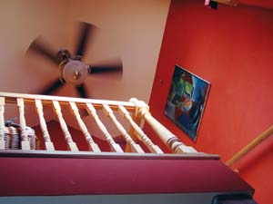
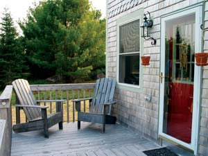
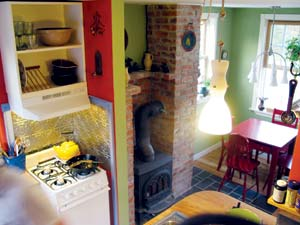
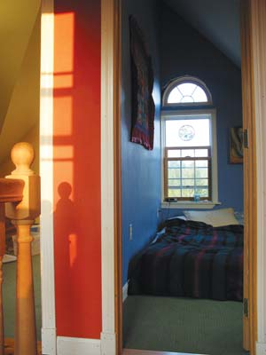

Sometimes good things do come in small packages. As the housing market in America super-sized and homeowners demanded more square footage for their new homes each year, Sarina Speed and her husband, Ben, went the opposite route: They decided to build the smallest house possible to fit their needs. Their two-story home in Franklin, Maine, clocks in at 640 square feet and stands 18-by-18 feet, smaller than some garages. The couple shares the home with their toddler, Noah, and a cat.
Quirky, small houses are a tradition in Maine. And the Speeds’ home was as carefully planned as some coastal mansions.
Sarina says it was important for her and her husband to build an environmentally friendly home that required a minimal amount of fossil fuels. The couple originally planned to build an off-the-grid home powered by solar panels, but the initial investment would’ve been too much. After months of research, the couple decided the easiest way to achieve energy efficiency was to reduce the size of the house. Their research paid off; their monthly electric bill is about $20 (they heat their home using a woodstove).
That’s amazing in this day and age, says Dick Brown, former program manager for Efficiency Maine, a program that helps Mainers save money on their electric bills. “Somebody with a $20 electric bill is basically using the minimum amount of electricity,” he says.
Sarina acknowledges that the roots for their decision to build a small house were put down at an early age: She was born into a home that measured just 16 by 16 feet. “I was fairly accustomed to the idea of smaller,” she says.
It helped that since she and her husband met, they have pared down their belongings to the bare essentials. There isn’t a lot of space to store things to be used someday. “You only really keep the things that have memories for you,” she says.
But creating a comfortable home is about more than paring down; it’s about good design. In a small home, every square foot of space is important. “Every corner has to be planned,” Sarina says.
The Speeds bought their small-house plan from small-home designer Jay Shafer through his company, Tumbleweed Tiny House Co., based in Sabastopol, Calif. Shafer, who lives in a 96-square-foot home, has constructed or provided plans for 70 small homes, ranging in size from 65 to 774 square feet. The Speeds then modified the plan to fit their needs.
In small-home design, the devil is in the details. The Speeds’ home employs dozens of space-saving tips: Stereo speakers are wired into the home and a flat-screen television is mounted on the wall. Vertical space is maximized with small shelves, and kitchen implements are hung from the ceiling. The bathroom and bedrooms are just big enough to move around comfortably. And there’s even the ingenious Splendid clothes washing machine that doubles as a dryer.
They also employed a host of tricks to make the space seem bigger than it is: A high percentage of windows to wall space lets in plenty of natural light. The walls are brightly colored, creating an airy and spacious feel in each room. And instead of a wide-open floor plan, each room has its own distinctive features or divider to differentiate it from the others.
Living in a small home for the past two years, says Sarina, has changed the way she goes about everything. “It makes for a lot less cluttered life,” she says.
John Gordon, an architect with Gordon-Stanley Architecture on Mount Desert Island and the 2006 winner of the Maine State Housing Authority’s Mainestream Green Home Design Contest, is impressed with the size of the Speeds’ home. He says he’s constantly trying to help his clients think smaller in the same way.
“It’s quantity versus quality,” Gordon says. “We’re trying to convince people to just build better.”
He thinks small-home design will become more popular as the price of home heating continues to climb.
Besides being cheaper to maintain, the Speeds’ home was cheaper to build, costing $55,000, including road and foundation work. To keep costs down, the couple did much of the nontechnical labor themselves or with the help of friends.
Sarina understands her home won’t have the same resale value as a 2,000-square-foot house, but she’s found the value is comparable when adjusted for size. Still, she knows the next owner of the home, if there’s to be one, probably won’t be as efficient at space management. “We’d probably market it as a summer home,” she says.
Although they’re considering having another child, the couple has no plans to move to more spacious digs. Sarina thinks the house may benefit from a mudroom and another bedroom someday, but all additions will be designed to be just as cozy as the main house.
“I doubt it will ever exceed 1,000 square feet,” she says.
|
 FRANCES IDLEBROOK With a total of 640 square feet, the Speed family home is just right. |
 FRANCES IDLEBROOK The Speeds, Ben, Sarina and Noah, live comfortably in their petite home, along with the family cat. |
 FRANCES IDLEBROOK The Speeds bought the plan for home from Tumbleweed Tiny House Co., based in Sabastopol, Calif. |
|
 FRANCES IDLEBROOK The details are doubly important for a small home, and the Speed’s home is efficient and attractive both inside and out. |
 FRANCES IDLEBROOK Thoughtful planning produced a design that is efficient and economical, as well as cheery and welcoming. |
 FRANCES IDLEBROOK The walls are brightly colored, creating an airy and spacious feel to each room. |